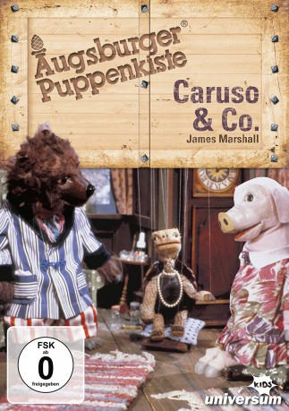

")
 
 IMDB-Wertung: 6.1 / 10
IMDB-Wertung: 6.1 / 10  Metascore:
Metascore: 
Caruso, der Bär, ist erkrankt. Zwar nicht sehr heftig, doch er leidet. Seine Freundin Ernestine, ein Schildkrötenfräulein, versucht ihn abzulenken und liest ihm eine Detektivgeschichte vor. Auch die Schweinedame Emily lauscht gebannt der sonderbaren Geschichte, die sich in einem Ferienhotel an der Küste zuträgt...
Nachdem die Geschichte ausgelesen ist, erzählt auch Emily ein Geschichte, um den Bären von seiner Schnupfnase abzulenken. Im Gegensatz zu Ernestines Detektivroman, erfindet sie die Geschichte jedoch selbst und macht Caruso, Ernestine und sich selbst zu den Hauptfiguren einer abenteuerlichen Bootsfahrt durch das Stinktierland...
Jahr: 1990
Dauer: 28 Minuten
FSK: 0
Land: West-Deutschland Studio: UFATonspuren:
Untertitel:
Auflösung: SD (640x480) Größe: 274 MB
Regisseur:
Drehbuch:
Soundtrack:
Darsteller:
Datei: X:\Kinder Serien\Augsburger Puppenkiste\Caruso & Co\Caruso & Co. - E01 - Schöner Sommer (DivX).avi seit 16.11.2019
Festplatte: Kinder-Filme+Trick
 Es gibt insgesamt 56 Filme in der Gruppe 'Kinder Serien'
Es gibt insgesamt 56 Filme in der Gruppe 'Kinder Serien'